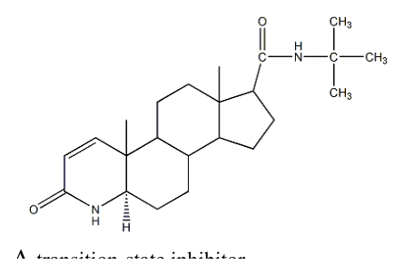
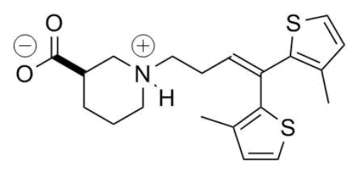
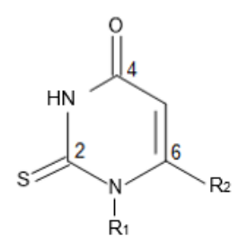
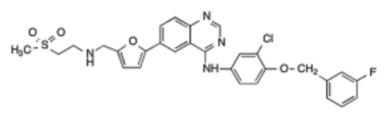
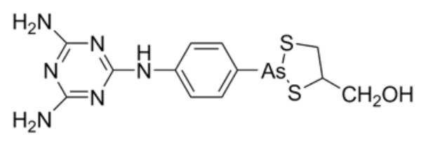

開卷有益 ／
藥師 ／ 藥理學與藥物化學 ／ 110 年第 2 次110 年第 2 次藥師藥理學與藥物化學試題與答案
這一頁是民國 110 年第 2 次藥師藥理學與藥物化學的整份歷屆試題，共 80 題，題目與標準答案出自考選部「國家考試試題及測驗式試題答案」開放資料，其中 71 題附有詳解。以下逐題列出題幹、選項與答案；要計時作答或記錄成績，請用線上練習。
考選部原始場次代碼：110101
線上作答這一科 →
全部 80 題
第 1 題
下列何者是藥物作用強度（potency）的指標？
（A） Kd（equilibrium dissociation constant）（B） intrinsic activity（C） EC50（D） efficacy答案：（C）
詳解與考點 正解：藥物作用強度（potency）以達到既定反應所需的濃度或劑量判斷；（C）EC50 是使反應達最大效應 50% 的濃度。EC50 越低，代表越少藥物便可達同一相對效應，potency 越高，故選 C。
A：Kd（equilibrium dissociation constant）主要反映藥物與受體的親和力。親和力可影響濃度反應曲線，但完整系統中的受體儲備與訊息傳遞效率也會影響 potency，不能把 Kd 直接當成作用強度指標。
B：intrinsic activity 反映藥物與受體結合後引發反應的能力，著重的是可產生多少效應，而非達到某一效應所需的濃度。
D：efficacy 指可達到的最大效應。兩藥即使 efficacy 相同，所需濃度仍可不同，因此 efficacy 不用來界定 potency。
本題考點：藥物作用強度（potency）——比較同一效應所需濃度時看 EC50，數值較低者 potency 較高；最大效應（efficacy）——比較藥物最多能產生多少反應時看 Emax，不以所需劑量判定；受體親和力（receptor affinity）——Kd 反映結合傾向，不能在未考慮受體儲備時直接等同臨床 potency。
第 2 題
下列情況所產生的拮抗作用，何者是chemical antagonism？
（A） insulin拮抗glucocorticoid所產生的高血糖作用（B） protamine拮抗heparin所產生的抗擬血作用（C） norepinephrine拮抗迷走神經所產生的心跳減慢作用（D） nitroprusside拮抗angiotensin II所產生的升壓作用答案：（B）
詳解與考點 正解：chemical antagonism 的判準是兩種物質在體外或體內直接發生化學結合，使其中一者失去活性；（B）protamine 帶正電，可與帶負電的 heparin 形成較無活性的複合物而中和其抗凝血作用，故選 B。
A：（A）insulin 降低血糖，而 glucocorticoid 促進糖質新生並使血糖上升；兩者是在生理效應上方向相反，沒有彼此直接結合，屬 physiological antagonism。
C：（C）norepinephrine 提高心跳速率，與迷走神經造成的心跳減慢相對抗。兩者分別經不同受體改變同一生理功能，屬 physiological antagonism。
D：（D）nitroprusside 的血管擴張作用與 angiotensin II 的血管收縮、升壓作用相反，也是不同路徑造成相反生理結果，並非化學中和。
本題考點：化學性拮抗（chemical antagonism）——判斷是否有直接結合、中和或形成無活性複合物；生理性拮抗（physiological antagonism）——兩條不同路徑對同一生理變數造成相反方向的效應時使用；protamine-heparin 中和——帶相反電荷的兩者直接結合是辨識 chemical antagonism 的典型線索。
第 3 題
下列何者不是經由cAMP之訊息傳遞途徑？
（A） vasopressin在腎臟中保持水分（B） 副甲狀腺荷爾蒙調控鈣離子之平衡（C） β-交感神經致效劑調控心肌收縮（D） α-交感神經致效劑之血管收縮作用答案：（D）
詳解與考點 正解：判斷訊息傳遞路徑要先辨認受體耦合的 G 蛋白；（D）血管收縮主要是 α1-交感神經受體活化 Gq，經 phospholipase C 產生 IP3 與 DAG，增加細胞內 Ca2+，不是經 cAMP，故選 D。
A：（A）vasopressin 在腎集合管保水主要經 V2 受體活化 Gs，再提高 cAMP 與 protein kinase A 活性，促使 aquaporin-2 進入管腔膜。
B：（B）副甲狀腺荷爾蒙的 PTH1 受體可經 Gs-cAMP 路徑調節鈣、磷平衡，因此符合題目所問的訊息傳遞系統。
C：（C）β-交感神經致效劑活化心肌 β1 受體後經 Gs 提高 cAMP，增加 Ca2+ 內流與心肌收縮力。
本題考點：Gs-cAMP 訊息傳遞（Gs-cAMP signaling）——遇到 β 受體、V2 受體或 PTH1 受體時，優先聯想到 cAMP 上升；Gq-IP3/DAG 訊息傳遞（Gq-IP3/DAG signaling）——遇到 α1 受體引發平滑肌收縮時，判斷重點是細胞內 Ca2+ 上升而非 cAMP；受體耦合辨識（G protein coupling）——先由受體決定 Gs、Gi 或 Gq，可避免只按生理效應猜第二訊使。
第 4 題
下列何種抗人類免疫缺乏病毒（HIV）藥物最不適用在懷孕婦女?
（A） etravirine（B） abacavir（C） darunavir（D） raltegravir答案：（A）
詳解與考點 正解：懷孕期間選用 HIV 藥物時，比較的是孕期安全性與藥物動力學資料是否足以支持使用；（A）etravirine 的懷孕期使用資料相對不足，因此在所列藥物中最不適合作為優先選擇，故選 A。
B：（B）abacavir 可作為抗反轉錄病毒治療的組成藥物；其重要風險是 HLA-B*57:01 相關過敏反應，而不是因懷孕本身即列為最不適用。
C：（C）darunavir 為 protease inhibitor，具有孕期治療使用經驗。臨床上需依併用藥與藥物動力學選擇合適方案，但不以證據特別不足作為本題的排除項。
D：（D）raltegravir 為 integrase strand transfer inhibitor，已有孕期使用資料，並非本題所問最不適用的藥物。
本題考點：孕期抗反轉錄病毒治療（antiretroviral therapy in pregnancy）——比較選項時先看孕期安全性與暴露量資料，不把一般成人療效直接外推；非核苷類反轉錄酶抑制劑（NNRTI）——同類藥物的孕期證據量可不同，不能只以同一類別判斷；HLA-B*57:01 過敏反應——遇到 abacavir 時應辨認其特異性過敏風險與孕期適用性是不同判準。
第 5 題
關於erythromycin的敘述，下列何者錯誤？
（A） 在酸性環境中能增加其藥效（B） 經由結合到50S核糖體RNA達到抑制細菌生存（C） 可以有效抑制肺炎黴漿菌（D） 因為抑制cytochrome P450酵素活性而會增加warfarin血中濃度答案：（A）
詳解與考點 正解：erythromycin 對胃酸不穩定，酸性環境會使其分解而降低口服可用性；（A）把酸性環境說成能增加藥效，方向相反，故選 A。
B：（B）erythromycin 結合細菌 50S 核糖體的 23S rRNA，抑制蛋白質合成與轉位步驟，符合 macrolide 類抗生素的作用位置。
C：（C）肺炎黴漿菌沒有細胞壁，不能依賴 β-lactam 類治療；erythromycin 抑制蛋白質合成，對此類非典型病原菌可有效。
D：（D）erythromycin 抑制 CYP3A4，可增加某些併用藥的暴露量；與 warfarin 併用時可能增強抗凝血效果，因此此敘述不是錯誤處。
本題考點：macrolide 類抗生素（macrolides）——遇到 erythromycin 時以 50S 核糖體與 23S rRNA 為作用位置判斷；酸不穩定性（acid lability）——藥物在酸中分解時，胃酸會降低而非增強其口服效果；CYP3A4 抑制（CYP3A4 inhibition）——併用窄治療窗藥物時，先判斷代謝是否可能被抑制而使藥效增強。
第 6 題
Vinblastine與paclitaxel共同點，下列何者錯誤？
（A） 皆能抑制微管蛋白聚合（tubulin polymerization）（B） 作用在有絲分裂期而抑制癌細胞分裂（C） 可由肝臟中P450系統代謝（D） 皆會有骨髓抑制不良反應答案：（A）
詳解與考點 正解：比較 vinblastine 與 paclitaxel 時，兩者都干擾微管功能但方向相反；（A）vinblastine 抑制 tubulin polymerization，而 paclitaxel 穩定已形成的微管並抑制其去聚合，不能說兩者都抑制聚合，故選 A。
B：（B）兩藥都使有絲分裂紡錘體無法正常運作，主要阻斷 M phase，因此皆可抑制癌細胞分裂。
C：（C）vinblastine 與 paclitaxel 都主要經肝臟 CYP 酵素系統代謝，併用影響 CYP 的藥物時可能改變其暴露量。
D：（D）骨髓抑制，尤其嗜中性白血球減少，是兩者共同的重要不良反應之一，並非錯誤敘述。
本題考點：微管抑制劑（microtubule inhibitors）——先分「抑制聚合」的 vinca alkaloids 與「穩定微管、抑制去聚合」的 taxanes；細胞週期特異性（cell-cycle specificity）——微管功能被干擾時以 M phase 阻斷判斷；骨髓抑制（myelosuppression）——比較抗癌藥共同毒性時，需與各藥特有毒性分開記憶。
第 7 題
關於乳癌的治療，下列何者錯誤？
（A） fluorouracil, doxorubicin, cyclophosphamide（FAC）對於第二期乳癌淋巴結轉移數少於三顆者有顯著效用（B） trastuzumab適用於有表達estrogen及progesterone受體，但HER-2/neu受體沒有表達的患者（C） 在使用tamoxifen藥物5年後建議以anastrozole來做為替代藥物繼續治療（D） 在有過度表達HER-2及EGFR之情形下，可以用lapatinib來治療轉移性乳癌答案：（B）
詳解與考點 正解：trastuzumab 的使用關鍵是腫瘤是否過度表達或擴增 HER-2/neu，而非 estrogen 或 progesterone 受體是否表達；（B）把 HER-2/neu 未表達者列為適用對象，與其標靶機轉不符，故選 B。
A：（A）fluorouracil、doxorubicin 與 cyclophosphamide 組成的 FAC 是乳癌輔助化療組合之一；題幹所述早期乳癌與較低淋巴結負擔的情境，仍可依復發風險評估其化療效益。
C：（C）對適當的荷爾蒙受體陽性且已停經患者，完成 tamoxifen 後改用 anastrozole 是延伸內分泌治療的常見策略；適用性取決於停經狀態與腫瘤受體特徵。
D：（D）lapatinib 同時抑制 HER2 與 EGFR 的 tyrosine kinase，可用於 HER2 驅動的轉移性乳癌治療，與（B）trastuzumab 所需的受體條件並不衝突。
本題考點：HER2 標靶治療（HER2-targeted therapy）——遇到 trastuzumab 時先確認 HER2 過度表達或擴增，不能以荷爾蒙受體陽性替代；內分泌治療序列（adjuvant endocrine therapy）——tamoxifen 與 aromatase inhibitor 的轉換需連同停經狀態判讀；多標靶酪胺酸激酶抑制劑（dual HER2/EGFR tyrosine kinase inhibitor）——lapatinib 的辨識重點是 HER2 與 EGFR 雙重抑制。
第 8 題
關於azoles類抗黴菌藥物之敘述，下列何者錯誤？
（A） 可抑制黴菌細胞膜之成分麥角固醇（ergosterol）生成而產生抗菌活性（B） fluconazole不會明顯抑制人類肝臟微粒體酶（hepatic microsomal enzymes）活性（C） itraconazole可有效進入腦脊髓液，可治療隱球菌引起之腦膜炎（cryptococcal meningitis）（D） voriconazole可能產生視覺障礙之副作用本題送分，無標準答案
第 9 題
下列有關肺結核治療劑isoniazid之敘述，何者正確？
（A） 為抑菌型抗生素（B） 可抑制細胞壁成分mycolic acid之生合成（C） 併用pyridoxine可預防肝炎副作用（D） 主要以原型由腎臟排出答案：（B）
詳解與考點 正解：isoniazid 的核心作用是阻斷分枝桿菌細胞壁特有的 mycolic acid 合成；（B）正確指出此作用位置，因而可選 B。
A：（A）isoniazid 對快速生長的結核分枝桿菌具有殺菌作用，不能概括為僅具抑菌性。
C：（C）pyridoxine 用於降低 isoniazid 引起的周邊神經病變風險，並非預防肝炎。分辨關鍵在於 vitamin B6 補充對應的是神經毒性。
D：（D）isoniazid 主要在肝臟經 acetylation 代謝，尿中以代謝物排出為主，不是以原型大量經腎臟排出。
本題考點：isoniazid 作用機轉（isoniazid mechanism）——遇到結核分枝桿菌細胞壁時，以 mycolic acid 生合成受抑判斷；pyridoxine 補充（pyridoxine supplementation）——與 isoniazid 併用時用來預防周邊神經病變，不用來處理肝毒性；藥物代謝（drug metabolism）——判斷排泄型態前先區分肝臟 acetylation 後的代謝物與原型藥。
第 10 題
Fingolimod hydrochloride為免疫調節劑，主要運用於治療多發性硬化症（multiple sclerosis），此藥物具有減低 周邊及腦部的循環淋巴細胞，下列何者為其主要作用標的（target）？
（A） sphingosine 1-phosphate（S1P）受體（B） calcineurin（C） TNF受體（D） IL-2受體答案：（A）
詳解與考點 正解：fingolimod 降低周邊循環淋巴細胞的線索，指向淋巴球自淋巴結外出的 sphingosine 1-phosphate 訊號；（A）S1P 受體被調節後使淋巴球滯留於淋巴組織，減少進入周邊血液與中樞神經系統，故選 A。
B：（B）calcineurin 是 cyclosporine 與 tacrolimus 抑制 T 細胞活化的標的，不是 fingolimod 造成淋巴球滯留的主要標的。
C：（C）TNF 受體與發炎細胞激素訊號有關；阻斷 TNF 的藥物不以改變 S1P 導引訊號來降低循環淋巴球。
D：（D）IL-2 受體阻斷可抑制淋巴球活化，例如移植免疫抑制策略，但不是 fingolimod 的作用位置。
本題考點：S1P 受體調節（S1P receptor modulation）——看到淋巴球滯留於淋巴結、周邊血淋巴球下降時，優先選 S1P 受體；功能性拮抗（functional antagonism）——受體先被作用後內化或失敏，最終使細胞無法依訊號外移時使用；多發性硬化症免疫調節（multiple sclerosis immunomodulation）——判斷藥物時要區分阻斷細胞活化與改變淋巴球遷移。
第 11 題
下列有關抗凝血藥物（anticoagulant）之分類，何者錯誤？
（A） 拮抗vitamin K代謝（B） 抑制factor Xa活性（C） 抑制thrombin活性（D） 抑制PGI2活性答案：（D）
詳解與考點 正解：抗凝血藥的共同方向是降低凝血因子生成或活性；（D）抑制 PGI2 會移除血小板聚集與血管收縮的抑制訊號，反而偏向血栓形成，不能列為 anticoagulant 的作用分類，故選 D。
A：（A）拮抗 vitamin K 會妨礙凝血因子成熟所需的 γ-carboxylation，因而降低凝血能力，符合抗凝血藥的機轉。
B：（B）抑制 factor Xa 可減少 thrombin 生成，是直接 factor Xa inhibitors 的主要作用方向。
C：（C）直接或間接抑制 thrombin 會阻礙 fibrinogen 轉為 fibrin，屬抗凝血治療的重要機轉。
本題考點：抗凝血藥（anticoagulants）——判斷時看是否減少凝血酶或 fibrin 形成；factor Xa 抑制（factor Xa inhibition）——阻斷 thrombin 爆發是其降低凝血的核心；prostacyclin（PGI2）——PGI2 本身抑制血小板聚集，抑制它的方向與抗凝血相反。
第 12 題
降血脂抗體藥物evolocumab主要可減少血液之LDL含量，同時也可降低triglycerides及apo B-100含量。下列何 者為其主要作用之標的（target）？
（A） proprotein convertase subtilisin/kexin type 9（PCSK9）（B） AMP-activated protein kinase（AMPK）（C） microsomal triglyceride transfer protein（MTP）（D） peroxisome proliferator-activated receptor（PPAR）答案：（A）
詳解與考點 正解：evolocumab 是降低 LDL 的單株抗體，關鍵在於阻止 LDL receptor 被 PCSK9 導向分解；（A）PCSK9 受抑後，肝細胞表面的 LDL receptor 增加，對 LDL 的清除隨之增加，故選 A。
B：（B）AMPK 是能量感測訊號分子，與 metformin 抑制肝臟糖質新生的機轉較相關，不是 evolocumab 的抗體標的。
C：（C）MTP 參與 VLDL 組裝；抑制 MTP 可降低脂蛋白生成，但不是以增加 LDL receptor 回收來降 LDL。
D：（D）PPAR 是核內受體，fibrates 等藥物可經其調節脂質代謝；evolocumab 不以活化或抑制 PPAR 發揮作用。
本題考點：PCSK9 抑制（PCSK9 inhibition）——遇到 evolocumab 時，從「保留 LDL receptor」推到 LDL 清除增加；LDL receptor 回收（LDL receptor recycling）——判斷降 LDL 機轉時，要區分降低製造與增加肝臟清除；單株抗體標的（monoclonal antibody target）——藥名與蛋白標的配對時，先辨認受體、酵素或循環蛋白的層級。
第 13 題
有關thalidomide藥物可應用於抗發炎及免疫調節之敘述，下列何者錯誤？
（A） 具有抗血管新生作用（B） 具有減少IL-10生成作用（C） 可使用於多發性骨髓瘤（multiple myeloma）（D） 具有降低嗜中性白血球之吞噬作用（phagocytosis）答案：（B）
詳解與考點 正解：thalidomide 的抗發炎免疫調節方向，是降低促發炎細胞激素並提升抗發炎訊號；（B）說它減少 IL-10 生成與此方向相反，故選 B。
A：（A）thalidomide 具有抗血管新生作用，這也是其能用於（C）多發性骨髓瘤治療的相關藥理特性之一。
C：（C）thalidomide 可用於多發性骨髓瘤，透過免疫調節、抗血管新生及影響腫瘤微環境發揮治療作用。
D：（D）thalidomide 可降低嗜中性白血球的吞噬與相關發炎反應，符合其抗發炎免疫調節作用，而非錯誤敘述。
本題考點：thalidomide 免疫調節（thalidomide immunomodulation）——判斷細胞激素敘述時，把抑制促發炎訊號與支持抗發炎 IL-10 的方向分開；抗血管新生（antiangiogenesis）——腫瘤治療中若藥物同時抑制新生血管，可支持其抗腫瘤效果；多發性骨髓瘤治療（multiple myeloma therapy）——辨認 immunomodulatory drugs 時，要連結免疫調節與腫瘤微環境作用。
第 14 題
下列corticosteroids製劑中何者抗發炎的能力最強，最常用於急需產生強效抗發炎效果時使用？
（A） cortisol（B） triamcinolone（C） fludrocortisone（D） dexamethasone答案：（D）
詳解與考點 正解：急需強效抗發炎時，應比較各 corticosteroid 的 glucocorticoid potency，而非礦物皮質素活性；（D）dexamethasone 的抗發炎效力在所列製劑中最高，且礦物皮質素作用很低，故選 D。
A：（A）cortisol 是生理性糖皮質素，抗發炎效力常作為比較基準，遠低於（D）dexamethasone。
B：（B）triamcinolone 具明顯糖皮質素抗發炎作用，但相對效力仍低於（D）dexamethasone，因此不是本題最強者。
C：（C）fludrocortisone 的突出特徵是強礦物皮質素活性，主要用於需要補充鹽皮質素效應的情境，不能以此推成最強抗發炎製劑。
本題考點：糖皮質素效力（glucocorticoid potency）——比較抗發炎強度時看 glucocorticoid activity，不看 mineralocorticoid activity；dexamethasone——題幹強調強效且急需抗發炎時，可由其高 glucocorticoid potency 辨認；fludrocortisone——看到強鈉滯留與鹽皮質素需求時才優先想到它。
第 15 題
下列性荷爾蒙製劑中，何者可和ethinyl estradiol合併使用作為口服避孕藥，而且最不易產生雄性素作用 （androgenic effect）？
（A） clomiphene（B） desogestrel（C） fluoxymesterone（D） norethindrone答案：（B）
詳解與考點 正解：與 ethinyl estradiol 合併的口服避孕藥需要具黃體素作用，並比較其 androgenic effect；（B）desogestrel 是低雄性素活性的黃體素，可作為複方口服避孕藥成分，故選 B。
A：（A）clomiphene 是 selective estrogen receptor modulator，主要用於誘導排卵，不是與 ethinyl estradiol 組成口服避孕藥的黃體素成分。
C：（C）fluoxymesterone 是合成 androgen，雄性素作用明顯，與題目要求最不易產生 androgenic effect 相反。
D：（D）norethindrone 可作為黃體素避孕成分，但其 androgenic effect 高於（B）desogestrel；分辨關鍵在於兩者同具黃體素作用，差別在雄性素活性強弱。
本題考點：複方口服避孕藥（combined oral contraceptives）——組成時以 estrogen 加上具黃體素作用的 progestin 判斷；雄性素活性（androgenic activity）——比較 progestin 時，低 androgenic effect 者較符合痤瘡、多毛等風險的辨析；desogestrel——看到第三代、低雄性素活性的口服避孕 progestin 時可優先辨認。
第 16 題
Clomiphene主要透過下列何種機轉而促使卵巢排卵？
（A） 活化下視丘之progesterone受體（B） 拮抗下視丘之estrogen受體（C） 拮抗卵巢細胞之androgen受體（D） 活化卵巢細胞之luteinizing hormone（LH）受體答案：（B）
詳解與考點 正解：clomiphene 促排卵的起點在下視丘對 estrogen 負回饋的感知；（B）它拮抗下視丘 estrogen 受體，使下視丘誤判 estrogen 不足，增加 GnRH、FSH 與 LH 分泌而促使排卵，故選 B。
A：（A）clomiphene 不以活化下視丘 progesterone 受體促排卵；其關鍵是（B）下視丘 estrogen 受體的拮抗。
C：（C）拮抗卵巢 androgen 受體不是 clomiphene 的主要機轉，也不能解釋（B）作用後 FSH 與 LH 上升。
D：（D）clomiphene 不直接活化卵巢 LH 受體，而是先經（B）下視丘 estrogen 受體的拮抗提高內源性 gonadotropins，兩者的作用位置不同。
本題考點：clomiphene（clomiphene citrate）——遇到排卵誘導時，從下視丘 estrogen 受體拮抗推論 GnRH 上升；負回饋（negative feedback）——阻斷 estrogen 感知會解除對 FSH 與 LH 的抑制；排卵誘導（ovulation induction）——先辨認是中樞提高 gonadotropins，還是直接刺激卵巢受體。
第 17 題
糖尿病治療用藥metformin，主要是藉由活化肝臟細胞內之下列何種機轉，而抑制糖質新生作用 （gluconeogenesis）？
（A） AMP-activated protein kinase（B） α-glucosidase（C） aromatase（D） ATP-sensitive potassium channels答案：（A）
詳解與考點 正解：metformin 抑制肝臟糖質新生的題幹線索，對應肝細胞能量感測訊號；（A）AMP-activated protein kinase 被活化後可降低肝臟糖質新生相關代謝流程，故選 A。
B：（B）α-glucosidase 位於腸道刷狀緣，抑制它會延緩醣類分解與吸收，是 acarbose 等藥物的作用位置，不是 metformin 的肝臟標的。
C：（C）aromatase 催化 androgen 轉為 estrogen，抑制它用於降低 estrogen 生成，與糖尿病的糖質新生抑制無關。
D：（D）ATP-sensitive potassium channels 與胰島 β 細胞去極化及胰島素分泌有關，是 sulfonylureas 的重要作用位置，不是 metformin 的主要機轉。
本題考點：metformin（metformin）——題幹同時出現肝臟與糖質新生時，優先連結 AMPK 活化；AMPK（AMP-activated protein kinase）——能量不足訊號被活化時，判斷方向是抑制耗能的糖質新生；降血糖藥分類（antidiabetic drug mechanisms）——以肝臟、腸道與胰島 β 細胞三個作用位置區分藥物。
第 18 題
長照中心長者患有高血壓並持續服用利尿劑，近期因感染症服用aminoglycoside抗生素，遂導致聽力受損。該 長者最可能服用下列何種利尿劑？
（A） acetazolamide（B） thiazide（C） ethacrynic acid（D） amiloride答案：（C）
詳解與考點 正解：題幹的 aminoglycoside 併用後聽力受損，是 ototoxicity 疊加的線索；（C）ethacrynic acid 為亨利氏環利尿劑，本身可致耳毒性，與 aminoglycoside 併用時風險增加，故選 C。
A：（A）acetazolamide 為 carbonic anhydrase inhibitor，主要在近端腎小管作用，沒有與 aminoglycoside 疊加耳毒性的代表性關聯。
B：（B）thiazide 主要在遠曲小管抑制 NaCl 再吸收，常見的不良反應型態不以 ototoxicity 為判斷重點。
D：（D）amiloride 為保鉀利尿劑，作用於集合管上皮鈉通道；其主要風險是高血鉀，而非與 aminoglycoside 疊加的聽力損害。
本題考點：亨利氏環利尿劑（loop diuretics）——遇到耳毒性與 aminoglycoside 併用時，優先辨認 loop diuretic；耳毒性加成（additive ototoxicity）——兩種可傷害內耳的藥物同用時，以不良反應疊加判讀；ethacrynic acid——在利尿劑選項中看到非 sulfonamide 的 loop diuretic 與耳毒性線索時可鎖定。
第 19 題
作用於亨利氏環之利尿劑furosemide在使用上可能發生不同種類之副作用，下列何者錯誤？
（A） 代謝性鹼中毒（metabolic alkalosis）（B） 高尿酸症（hyperuricemia）（C） 過敏反應（allergy）（D） 高血鎂症（hypermagnesemia）答案：（D）
詳解與考點 正解：furosemide 抑制亨利氏環粗上行支的 Na+-K+-2Cl− cotransporter，會增加 Mg2+ 排出；（D）高血鎂症與此排泄方向相反，錯誤的結果應是低血鎂症，故選 D。
A：（A）furosemide 造成體液量縮減與遠端鈉負荷增加，可促進 H+、K+ 排出，因而可能導致 metabolic alkalosis。
B：（B）體液量縮減會降低尿酸排泄，加上與尿酸分泌競爭，可造成 hyperuricemia，這是 loop diuretic 的常見代謝性不良反應。
C：（C）furosemide 為 sulfonamide 衍生物，可發生過敏反應；有 sulfonamide 過敏史時需辨認此風險。
本題考點：亨利氏環利尿劑（loop diuretics）——抑制 Na+-K+-2Cl− cotransporter 時，聯想到 Na+、K+、Ca2+ 與 Mg2+ 排出增加；低血鎂症（hypomagnesemia）——遇到 loop diuretic 與鎂離子時，判斷方向是尿中流失增加；收縮性鹼中毒（contraction alkalosis）——利尿造成體液量縮減並增加遠端 H+ 排泄時，優先判斷 metabolic alkalosis。
第 20 題
Aminocaproic acid 或tranexamic acid可以使用於預防顱內動脈瘤再出血、手術後腸胃道出血、黏膜輕微出血 （如月經量過多、口腔出血、流鼻血）等等，其藥物作用機制為何？
（A） factor Xa inhibitor（B） serine protease inhibitor（C） fibrinolytic inhibitor（D） plasmin inhibitor本題送分，無標準答案
第 21 題
Renin-angiotensin system作用藥物，用於心衰竭治療的機制，下列何者正確？
（A） angiotensin receptor blocker可以減少preload及afterload（B） angiotensin converting enzyme inhibitors不會影響交感神經釋放神經傳遞物質（C） losartan會增加血中angiotensin II，反而會增加心臟纖維化（D） captopril不會減少aldosterone產生，所以不會影響preload答案：（A）
詳解與考點 正解：關鍵在心衰竭治療要同時降低靜脈回流與周邊血管阻力。angiotensin receptor blocker 阻斷 AT1 受體後，血管擴張可降低後負荷，aldosterone 受刺激減少則減少鈉水滯留與前負荷，所以此敘述正確，故選 A。
B：ACE inhibitors 會減少 angiotensin II 的形成。angiotensin II 原會促進交感神經末梢釋放 norepinephrine，因此抑制後並非完全不影響交感神經傳遞物質的釋放。
C：losartan 阻斷 AT1 後，負回饋解除可使血中 angiotensin II 上升；但心肌纖維化主要由 AT1 訊號促進，受體已被阻斷，不能把濃度上升直接推成纖維化增加。
D：captopril 使 angiotensin II 降低，進而減少 aldosterone 生成。鈉與水的滯留下降會使靜脈回流與前負荷下降，與敘述相反。
本題考點：心衰竭的 RAAS 抑制（renin-angiotensin-aldosterone system inhibition）——判斷前負荷看鈉水滯留與靜脈回流，判斷後負荷看周邊血管阻力；AT1 受體阻斷（AT1 receptor blockade）——即使 angiotensin II 因負回饋上升，只要 AT1 被阻斷，其主要血管收縮與纖維化效應仍會下降。
第 22 題
Organic nitrates用於治療心絞痛主要的藥理機制為何？
（A） 經由抑制平滑肌細胞內cGMP代謝，擴張冠狀動脈以增加血流量（B） 擴張動脈血管，減少心臟後負荷，降低心臟壓力（C） 經由減少心臟前負荷，降低心輸出量，使心肌需氧量降低（D） 抑制血小板凝集，避免粥狀硬化區更加狹窄答案：（C）
詳解與考點 正解：organic nitrates 轉成 nitric oxide 後會活化 soluble guanylyl cyclase，使平滑肌內 cGMP 增加。其主要血流動力學效應是靜脈擴張，靜脈回流與前負荷下降，心室壁張力及心肌需氧量隨之降低，故選 C。
A：organic nitrates 是促進 cGMP 生成，不是抑制其代謝。抑制 cGMP 分解是 phosphodiesterase 抑制劑的作用位置，兩者都會使 cGMP 上升，但機轉不同。
B：此類藥在較高劑量也可擴張動脈而降低後負荷，但治療心絞痛的主要效益是靜脈擴張造成的前負荷下降，不是以動脈擴張為主。
D：organic nitrates 並非以抑制血小板凝集或防止粥狀硬化狹窄作為主要止痛機轉；其核心是迅速降低心肌耗氧量。
本題考點：有機硝酸鹽（organic nitrates）——遇到心絞痛時先判斷是否以靜脈擴張降低前負荷與心室壁張力；NO-cGMP 訊號（nitric oxide-cGMP signaling）——藥物若活化 guanylyl cyclase 是增加生成，若抑制 phosphodiesterase 才是減少分解。
第 23 題
下列那一類降血壓藥可能會增加血中renin及angiotensin II濃度，並可能減少aldosterone分泌？
（A） aliskiren（B） candesartan（C） captopril（D） propranolol答案：（B）
詳解與考點 正解：判準是同時分開看負回饋與腎上腺 AT1 受體。candesartan 阻斷 AT1 後，angiotensin II 對 renin 的負回饋消失，因此 renin 與 angiotensin II 都可上升；但 angiotensin II 無法經 AT1 充分刺激 aldosterone 分泌，故選 B。
A：aliskiren 直接抑制 renin，會使 angiotensin I 與 angiotensin II 的生成下降，不符合兩者都上升的條件。
C：captopril 阻斷 angiotensin converting enzyme，可因負回饋解除使 renin 上升，但 angiotensin II 的生成會下降，與題幹不符。
D：propranolol 阻斷腎臟近絲球細胞的 beta1 受體，會抑制 renin 釋放，不會造成 renin 上升。
本題考點：AT1 受體阻斷劑（angiotensin receptor blockers）——看到 renin 與 angiotensin II 同升時，判斷是否為解除 AT1 負回饋；RAAS 負回饋（RAAS negative feedback）——ACE 抑制與 renin 抑制都可使 aldosterone 下降，但對 angiotensin II 濃度的方向不同。
第 24 題
下列何藥物主要會抑制圖中位置1之NaHCO3之再吸收？
（A） ADH（antidiuretic hormone）antagonists（B） acetazolamide（C） mannitol（D） thiazides答案：（B）
詳解與考點 正解：腎絲球過濾後的NaHCO3,絕大部分於近曲小管經碳酸酐酶（carbonic anhydrase）催化的機轉再吸收，acetazolamide透過抑制碳酸酐酶，直接阻斷此段NaHCO3的再吸收，是此類經典腎元示意圖中對應近曲小管位置作用機轉最明確的藥物，故選B。
A：ADH拮抗劑作用於集尿管，抑制水的再吸收，與NaHCO3再吸收的機轉及位置皆不同。
C：mannitol為滲透性利尿劑，主要作用於近曲小管與亨利氏環，透過滲透壓效應抑制水與部分電解質的再吸收，並非以抑制碳酸酐酶阻斷NaHCO3再吸收為主要機轉。
D：thiazides主要作用於遠曲小管，抑制Na+/Cl−共同運輸，與近曲小管NaHCO3再吸收的機轉及位置不同。
本題考點：近曲小管NaHCO3再吸收機轉（proximal tubule bicarbonate reabsorption）——依賴碳酸酐酶催化，acetazolamide抑制此酵素直接阻斷NaHCO3再吸收；利尿劑作用部位的區分——近曲小管（acetazolamide、mannitol部分作用）、亨利氏環（loop diuretics）、遠曲小管（thiazides）、集尿管（ADH拮抗劑、鉀離子保留性利尿劑）各有明確對應位置，不可混淆。
第 25 題
安非他命（amphetamine）是間接作用型擬交感神經藥物，造成突觸間隙生物胺神經傳導物質正腎上腺素或多 巴胺濃度上升，增強其效應。下列作用機轉何者錯誤？
（A） 安非他命抑制正腎上腺素或多巴胺代謝酵素monoamine oxidase（B） 安非他命可藉由細胞膜上之正腎上腺素轉運體（norepinephrine transporter, NET）進入突觸前神經末梢，促使 突觸前神經末梢內生物胺神經傳導物質排空（C） 安非他命在突觸前神經末梢內，可藉由抑制突觸小囊之單胺類轉運體（vesicular monoamine transporter, VMAT），導致生物胺類神經傳導物不易進入突觸小囊（D） 安非他命藉由抑制細胞膜上之正腎上腺素轉運體（norepinephrine transporter, NET），抑制突觸間隙之正腎 上腺素被突觸前神經末梢再回收答案：（D）
詳解與考點 正解：安非他命增加突觸間隙生物胺的關鍵，是作為 NET 的受質進入突觸前末梢並促進反向運輸與釋放，而非單純把 NET 當作再回收抑制劑。把其作用寫成抑制 NET、阻止再回收，混淆了釋放劑與再回收抑制劑的機轉，故選 D。
A：抑制 monoamine oxidase 會減少正腎上腺素與多巴胺的代謝，使可供釋放的生物胺增加，符合本題列出的濃度上升方向。
B：安非他命可經 NET 進入突觸前神經末梢，擾動末梢內的胺類儲存與濃度梯度，促使生物胺由末梢釋放到突觸間隙。
C：安非他命干擾 VMAT 所維持的囊泡儲存，會使生物胺較不易被封存於突觸小囊、胞質濃度上升，進而有利於釋放。
本題考點：安非他命的間接擬交感作用（indirect sympathomimetic action）——判斷重點是藥物先進入神經末梢並促進胺類釋放；NET 的兩種角色（norepinephrine transporter mechanisms）——安非他命利用並反轉轉運方向，再回收抑制劑則主要阻斷轉運體，兩者都會使突觸間隙濃度上升但機轉不同。
第 26 題
1995年日本發生東京地鐵沙林（sarin）毒氣事件，沙林是有機磷類神經毒氣，在沙林中毒病患身上預期可以 看到的臨床病症為何？
（A） 瞳孔收縮（B） 心搏過速（C） 口乾舌燥（D） 尿滯留答案：（A）
詳解與考點 正解：沙林為有機磷類毒物，會使 acetylcholinesterase 失活，造成 acetylcholine 在副交感神經突觸累積。眼部 muscarinic 受體過度刺激會使瞳孔括約肌收縮，因此預期出現瞳孔收縮，故選 A。
B：心臟 M2 受體受 acetylcholine 刺激時以心跳變慢為主，心搏過速不是典型的 muscarinic 毒性表現。
C：唾液腺 muscarinic 受體受刺激會造成分泌增加，常見流涎與支氣管分泌增加，不會口乾舌燥。
D：副交感神經會促進逼尿肌收縮並降低膀胱出口阻力，傾向尿急或尿失禁，不是尿滯留。
本題考點：有機磷中毒（organophosphate poisoning）——看見 acetylcholinesterase 失活時，依 muscarinic 過度刺激預測縮瞳、分泌增加與心跳變慢；自主神經方向判讀（autonomic receptor effects）——分辨副交感毒性時，將眼、腺體、心臟與膀胱逐一對回 acetylcholine 的生理作用方向。
第 27 題
下列有關擬交感神經作用劑產生之反應，何者錯誤？
（A） phenylephrine可活化廣泛存在血管壁上alpha1受體，形成血管收縮，血壓上升現象（B） clonidine可活化中樞和周邊神經系統之alpha2受體，產生抑制交感神經張力（sympathetic tone），血壓下降 現象（C） phenylephrine可活化心臟alpha1受體，增加心收縮力（D） isoproterenol非選擇性活化心臟上beta受體，增加心收縮力、心臟輸出及心跳速率答案：（B）
詳解與考點 正解：關鍵在 clonidine 的降壓主效來自中樞 alpha2 受體，不是周邊 alpha2 受體的直接作用。周邊 alpha2 受體活化可造成血管收縮，不能把中樞與周邊效應一併說成抑制交感神經張力、使血壓下降，故選 B。
A：phenylephrine 可活化廣泛位於血管平滑肌的 alpha1 受體，造成血管收縮、周邊阻力增加與血壓上升，敘述正確。
C：心肌也有 alpha1 受體，活化可增加心收縮力；phenylephrine 的血管 alpha1 效應較突出，並不使這項受體反應成為錯誤敘述。
D：isoproterenol 為非選擇性 beta 受體作用劑；其心臟 beta1 效應可增加心收縮力、心輸出量與心跳速率。
本題考點：clonidine 的 alpha2 作用（central versus peripheral alpha2 effects）——中樞 alpha2 活化會降低交感神經輸出，周邊 alpha2 活化則要另判血管收縮效應；alpha1 受體反應（alpha1-adrenergic effects）——判斷 alpha1 時分開看血管收縮與心肌收縮力，不能只用最顯著的臨床效應否定另一處受體反應。
第 28 題
下列antimuscarinic drug之點眼劑，何者之散瞳作用時間最短？
（A） scopolamine（B） tropicamide（C） atropine（D） homatropine答案：（B）
詳解與考點 正解：散瞳檢查需要短效 antimuscarinic drug 時，tropicamide 的作用持續時間最短，因此散瞳與調節麻痺恢復最快，故選 B。
A：scopolamine 的抗 muscarinic 作用較久，不適合作為四者中最短效的散瞳藥。
C：atropine 為長效散瞳劑，瞳孔與調節功能恢復所需時間最久，是 tropicamide 的強誘答對照。
D：homatropine 的作用時間雖短於 atropine，但仍長於 tropicamide，不能選作最短效者。
本題考點：眼用抗 muscarinic 藥（ophthalmic antimuscarinics）——題目問散瞳後恢復快慢時，以作用持續時間而非散瞳強度排序；tropicamide（tropicamide）——需短暫散瞳檢查時選短效藥，避免把較長效的 atropine 與 homatropine 混入。
第 29 題
下列H2-receptor antagonist中，何者會抑制雄激素受體而產生性無能？
（A） cimetidine（B） famotidine（C） nizatidine（D） ranitidine答案：（A）
詳解與考點 正解：在 H2-receptor antagonist 中，cimetidine 具有較明顯的抗雄激素作用，可造成性慾降低、性無能或男性女乳症；這是它與其他同類藥的重要不良反應差異，故選 A。
B：famotidine 的抗雄激素效應不顯著，並非此類性功能不良的典型原因。
C：nizatidine 主要以抑制胃壁細胞 H2 受體降低胃酸分泌，不具 cimetidine 那種具代表性的抗雄激素不良反應。
D：ranitidine 亦為 H2 受體拮抗劑，但性無能與雄激素受體抑制的關聯遠不如 cimetidine 明顯。
本題考點：cimetidine 的抗雄激素作用（antiandrogenic effect of cimetidine）——在 H2 受體拮抗劑中遇到男性女乳症或性功能不良時，優先辨認 cimetidine；同類藥不良反應區辨（class-specific adverse effects）——同樣抑制 H2 受體不代表共有相同的內分泌副作用，需記住具辨識力的個別藥物。
第 30 題
下列藥物何者可與phenothiazine合用，加強止吐作用及減少副作用？
（A） meclizine（B） metoclopramide（C） dronabinol（D） ondansetron答案：（C）
詳解與考點 正解：phenothiazine 與不同受體途徑的止吐藥併用，可加強療效並降低高劑量需求。dronabinol 為 cannabinoid 受體作用劑，與 phenothiazine 的 dopamine D2 阻斷不同，可形成互補止吐效果並降低 phenothiazine 劑量相關的不良反應，故選 C。
A：meclizine 以 H1 受體阻斷及抗 muscarinic 效應治療動暈，與 phenothiazine 合用會增加鎮靜與口乾等效應，不是本題的互補組合。
B：metoclopramide 也會阻斷 dopamine D2 受體。兩藥併用看似都能止吐，但會疊加 dopamine 阻斷與錐體外症狀風險，不符合減少副作用的條件。
D：ondansetron 為 5-HT3 受體拮抗劑，雖能治療多種噁心嘔吐，但不是本題所指與 phenothiazine 併用以降低其副作用的藥物。分辨關鍵在特定併用組合，不只看是否具止吐效果。
本題考點：cannabinoid 止吐藥（cannabinoid antiemetics）——遇到 dronabinol 時，辨認其與 dopamine D2 阻斷劑不同的受體途徑；多機轉止吐併用（multimodal antiemetic therapy）——合併藥物時要同時判斷受體互補與不良反應是否會疊加，不能只因兩藥都能止吐就直接配對。
第 31 題
下列有關indomethacin之敘述，何者錯誤？
（A） 具有止痛及抗發炎效用（B） 非選擇性抑制COX（C） 不會有中樞神經系統之副作用（D） 使用後具腸胃不適之副作用答案：（C）
詳解與考點 正解：indomethacin 雖是有效的 NSAID，卻可造成頭痛、眩暈、混亂等中樞神經副作用；將它說成不會有中樞神經系統副作用是絕對化的錯誤敘述，故選 C。
A：indomethacin 抑制 prostaglandin 合成，具有止痛與抗發炎效果，敘述正確。
B：indomethacin 為非選擇性 COX 抑制劑，同時抑制 COX-1 與 COX-2，這也解釋其療效與部分不良反應。
D：抑制胃黏膜保護性 prostaglandin 會增加胃腸不適、潰瘍與出血風險，腸胃不適是常見 NSAID 類副作用。
本題考點：indomethacin 不良反應（indomethacin adverse effects）——判斷 NSAID 時除了胃腸毒性，也要辨認 indomethacin 較突出的中樞神經症狀；非選擇性 COX 抑制（nonselective COX inhibition）——同時抑制 COX-1 與 COX-2 時，抗發炎效果與胃黏膜保護下降會一併出現。
第 32 題
下列治療痛風藥物，何者主要機轉為促進尿酸排除？
（A） colchicine（B） allopurinol（C） probenecid（D） sulindac答案：（C）
詳解與考點 正解：probenecid 是 uricosuric drug，主要在近端腎小管抑制尿酸再吸收轉運，尤其是 URAT1 相關路徑，使尿酸排出增加，故選 C。
A：colchicine 抑制微管聚合並降低嗜中性球介導的發炎反應，主要用於急性痛風發作的抗發炎處理，不是促尿酸排除。
B：allopurinol 抑制 xanthine oxidase，減少尿酸生成；它控制的是生成端，而不是增加腎臟排泄。
D：sulindac 為 NSAID，可減輕疼痛與發炎，但不是以促進尿酸排除作為主要治療機轉。
本題考點：促尿酸藥（uricosuric agents）——問尿酸排除增加時，判斷是否抑制近端腎小管的尿酸再吸收；痛風藥物分流（gout pharmacotherapy）——colchicine 管急性發炎、allopurinol 管尿酸生成、probenecid 管尿酸排泄，先分治療環節再選藥。
第 33 題
下列關於肉毒桿菌毒素（botulinum toxin）的敘述，何者錯誤？
（A） 是一種蛋白質水解酵素（B） 局部注射可以治療腦性麻痺（cerebral palsy），急性偏頭痛（acute migraine）（C） 可以治療膀胱過度活性之尿失禁（incontinence due to overactive bladder）（D） 可能的副作用為肌肉無力、疼痛答案：（B）
詳解與考點 正解：肉毒桿菌毒素可用於特定局部肌肉痙攣與慢性偏頭痛的預防，但不是治療急性偏頭痛發作的藥物。選項把可治療的腦性麻痺痙攣與不適用的急性偏頭痛併列，整體敘述錯誤，故選 B。
A：肉毒桿菌毒素為蛋白質水解酵素，可切割突觸前 SNARE 蛋白並抑制 acetylcholine 囊泡釋放，敘述正確。
C：局部注射可降低逼尿肌過度活動，能用於膀胱過度活性相關的尿失禁。
D：注射部位疼痛與局部或鄰近肌肉無力是可預期的不良反應，敘述正確。
本題考點：肉毒桿菌毒素機轉（botulinum toxin mechanism）——看到局部肌肉鬆弛時，連結其阻斷突觸前 acetylcholine 釋放；偏頭痛適應症（migraine prophylaxis）——區分預防慢性偏頭痛與處理急性發作，不能因同為偏頭痛而互換用途。
第 34 題
下列有關治療威爾森氏症（Wilson's disease）之敘述，何者錯誤？
（A） 血中銅離子太多（B） 腦和內臟銅離子多（C） penicillamine是首選之藥（D） 口服zinc acetate可以增加銅離子之排除答案：（A）
詳解與考點 正解：威爾森氏症因銅代謝異常而在肝、腦等組織累積，但血中總銅濃度不能一概說成升高。由於 ceruloplasmin 常降低，總血清銅可偏低；游離銅比例則可能增加，因此此絕對敘述錯誤，故選 A。
B：銅無法妥善排出與運送時會在腦及內臟累積，是威爾森氏症的病理基礎，敘述正確。
C：penicillamine 為螯合劑，可與銅結合並促進排銅；在本題的傳統治療架構中屬首選藥物。
D：口服 zinc acetate 可誘導腸細胞 metallothionein，降低銅的腸道吸收，並使結合的銅隨腸黏膜更新而排出，敘述正確。
本題考點：威爾森氏症的銅分布（Wilson disease copper distribution）——判讀血清銅時要分總銅與游離銅，不能只以組織蓄積推論總血清銅必高；銅螯合與鋅治療（copper chelation and zinc therapy）——需要排銅時辨認螯合劑，需要降低吸收時辨認 zinc acetate 的腸道 metallothionein 機轉。
第 35 題
下列比較鎮靜安眠劑ramelteon和suvorexant之敘述，何者正確？
（A） melatonin receptor antagonist；orexin receptor antagonist（B） melatonin作用在腦下垂體（pituitary gland）；suvorexant作用在下視丘（hypothalamus）（C） melatonin脂溶性高；suvorexant脂溶性低（D） 兩者皆是針對治療「入睡困難」的疾病答案：（D）
詳解與考點 正解：ramelteon 與 suvorexant 的受體機轉不同，但兩者都可用於失眠中的入睡困難。ramelteon 為 melatonin MT1/MT2 受體致效劑，suvorexant 為 orexin 受體拮抗劑，前者促進睡眠訊號、後者抑制清醒訊號，故選 D。
A：ramelteon 是 melatonin receptor agonist，不是 melatonin receptor antagonist；suvorexant 才是以拮抗 orexin 受體發揮作用。
B：melatonin 訊號的主要睡眠調節位置在下視丘的 suprachiasmatic nucleus，不是腦下垂體。以作用器官直接對比兩藥，忽略了受體與神經迴路才是判別重點。
C：suvorexant 不是可與 melatonin 對照成低脂溶性的藥物；此選項的脂溶性高低無法正確區分兩者的睡眠機轉。
本題考點：melatonin 受體致效劑（melatonin receptor agonists）——入睡困難合併晝夜節律線索時，辨認 ramelteon 的 MT1/MT2 訊號；orexin 受體拮抗劑（orexin receptor antagonists）——失眠治療若以壓低清醒驅動為主，連結 suvorexant，而非把它誤認為 melatonin 受體藥。
第 36 題
嚴重燒傷的病人服用非去極化神經肌肉阻斷劑（nondepolarizing neuromuscular blocking agent），需要如何調 整劑量，原因為何？
（A） 增加藥物劑量，因為extrajunctional ACh受體退化（B） 減少藥物劑量，因為extrajunctional ACh受體過度增生（C） 增加藥物劑量，因為extrajunctional ACh受體過度增生（D） 減少藥物劑量，因為extrajunctional ACh受體退化答案：（C）
詳解與考點 正解：嚴重燒傷後骨骼肌會出現 extrajunctional ACh 受體過度增生，使病人對非去極化神經肌肉阻斷劑的反應下降。因此要取得相同的神經肌肉阻斷效果，通常需增加藥物劑量，故選 C。
A：嚴重燒傷的關鍵變化不是 extrajunctional ACh 受體退化，而是受體數量與分布增加，因此理由錯誤。
B：受體過度增生會造成對非去極化阻斷劑的相對抗性，不會因而減少所需劑量。
D：此選項同時把受體變化寫成退化、把劑量方向寫成減少，均與燒傷後的藥效反應相反。
本題考點：燒傷後神經肌肉受體上調（extrajunctional ACh receptor upregulation）——遇到嚴重燒傷時，先判斷終板外 ACh 受體增加；非去極化阻斷劑抗性（resistance to nondepolarizing neuromuscular blockers）——受體增多使相同劑量的競爭性阻斷較不足，劑量調整方向為增加。
第 37 題
下列有關benzodiazepine之敘述，何者正確？
（A） 增加GABAA接受器氯離子通道開啟的時間（duration）（B） 半衰期較短的benzodiazepine較不易產生藥物依賴性（C） 長期使用會造成耐藥性（tolerance），與benzodiazepine受體數量降低（down regulation）有關（D） flurazepam是benzodiazepine受體拮抗劑，能快速地反轉benzodiazepine藥物的作用答案：（C）
詳解與考點 正解：benzodiazepine 長期使用可出現耐藥性，與 benzodiazepine 受體數量下降及受體耦合適應有關；相同劑量的鎮靜效果會逐漸減弱，故選 C。
A：benzodiazepine 增加 GABAA 受體氯離子通道開啟的頻率；延長每次開啟時間是 barbiturates 的典型作用。
B：半衰期短的 benzodiazepine 藥效消退快，較容易發生戒斷與反彈性失眠，不能因此認定較不易產生依賴性。
D：flurazepam 是具鎮靜安眠作用的 benzodiazepine，不是受體拮抗劑；可快速反轉 benzodiazepine 作用的是 flumazenil。
本題考點：benzodiazepine 耐受性（benzodiazepine tolerance）——長期使用後療效下降時，連結受體下調與神經適應；GABAA 調節差異（GABAA receptor modulation）——benzodiazepine 看開啟頻率，barbiturates 看開啟時間；flumazenil（flumazenil）——需要反轉 benzodiazepine 受體作用時，辨認競爭性拮抗劑而非另一個鎮靜劑。
第 38 題
有關鎮靜安眠藥物，下列何者用於治療難以入睡型的失眠患者？
（A） diazepam（B） estazolam（C） zolpidem（D） temazepam答案：（C）
詳解與考點 正解：難以入睡型失眠需要起效快、作用時間較短的安眠藥。zolpidem 可快速產生鎮靜催眠效果，殘餘日間鎮靜相對較少，因此是本題最符合入睡困難的選項，故選 C。
A：diazepam 作用時間長，容易產生日間殘餘鎮靜，不是針對單純入睡困難的優先選擇。
B：estazolam 的作用時間較 zolpidem 長，雖可用於失眠，但在四者中不是最能對準快速入睡需求的藥物。
D：temazepam 的作用時間亦較長，較容易延續到睡眠維持與隔日效應，不能取代短效 zolpidem 的定位。
本題考點：失眠表型與藥物半衰期（insomnia phenotype and half-life）——入睡困難優先選起效快且較短效的藥，睡眠維持問題才考慮較久效者；zolpidem（zolpidem）——需迅速誘發睡眠時辨認其短效鎮靜催眠定位，不與長效 benzodiazepine 混用。
第 39 題
下列何者可當methanol中毒之解毒劑？
（A） glucagon（B） fomepizole（C） bicarbonate（D） esmolol答案：（B）
詳解與考點 正解：methanol 的危險在於經 alcohol dehydrogenase 代謝後形成 formaldehyde 與 formic acid。fomepizole 抑制 alcohol dehydrogenase，可阻止毒性代謝物持續生成，因此可作為 methanol 中毒的解毒劑，故選 B。
A：glucagon 主要用於 beta-blocker 中毒造成的心搏過慢與低血壓，不會阻斷 methanol 的毒性代謝。
C：bicarbonate 可矯正 formic acid 導致的代謝性酸中毒，但不會抑制 alcohol dehydrogenase，屬輔助酸鹼處置而非解毒劑。
D：esmolol 為短效 beta1 受體阻斷劑，主要用於控制特定心血管狀況，與 methanol 中毒的代謝途徑無關。
本題考點：methanol 中毒解毒（methanol poisoning antidote）——先找能阻斷 alcohol dehydrogenase 的藥物，以防止 formic acid 生成；中毒處置分工（toxic alcohol management）——解毒劑阻斷毒性生成，bicarbonate 則處理已出現的酸中毒，兩者用途不能互換。
第 40 題
下列有關解毒劑deferoxamine的敘述，何者錯誤？
（A） 主要從Streptomyces pilosus分離出（B） 可以治療鐵中毒（C） 口服效果佳（D） 快速給藥時會造成低血壓的副作用答案：（C）
詳解與考點 正解：deferoxamine 為鐵螯合劑，但口服吸收很差，臨床上需以非口服途徑給藥。因此將它說成口服效果佳是錯誤敘述，故選 C。
A：deferoxamine 可由 Streptomyces pilosus 分離取得，敘述正確。
B：deferoxamine 與鐵形成可排出的螯合物，可用於急性鐵中毒及鐵負荷過多的治療。
D：快速給藥可能造成低血壓，是 deferoxamine 給藥速度必須留意的不良反應，敘述正確。
本題考點：deferoxamine 給藥途徑（deferoxamine administration）——遇到急性鐵中毒時，辨認其口服生體可用率差、需採非口服給藥；鐵螯合治療（iron chelation therapy）——判斷解毒劑時要同時記住螯合對象與輸注速度相關的不良反應。
第 41 題
下列何者為前驅藥轉換為原型藥過程中，最常見參與反應的官能基團？
（A） ester（B） amide（C） carbamate（D） urea答案：（A）
詳解與考點 正解：前驅藥常以可被體內酵素水解的基團暫時遮蔽極性或改善吸收，其中（A）ester 最常用。酯酶廣泛存在於血液、肝臟與組織，酯鍵水解後可釋出含羧酸或醇基的原型藥，反應條件溫和且轉換效率通常可靠，故選 A。
B：amide 的水解穩定性通常高於 ester，需較強的酵素催化或較久時間才會裂解；它可用於特定設計，但不是最常見的前驅藥活化官能基。
C：carbamate 雖也能被水解，卻因共振穩定而比一般 ester 更耐水解。分辨關鍵在於前驅藥若要快速、常規地釋放原型藥，通常優先選擇較易裂解的 ester。
D：urea 的鍵結相對穩定，較常作為藥物骨架的一部分，不適合作為最典型的酵素水解型前驅基團。
本題考點：前驅藥活化（prodrug activation）——看到以遮蔽基團改善脂溶性或吸收時，先判斷體內能否把該基團移除而釋放原型藥；酯類水解（ester hydrolysis）——若題目問最常見的酵素切斷型前驅基團，優先選 ester，因其易受 esterase 水解；醯胺穩定性（amide stability）——比較 ester、amide 與 carbamate 時，水解較慢者通常不作為首選的快速釋放基團。
第 42 題
Pegloticase代謝尿酸後，同時會產生何種物質，易導致變性血紅素血症（methemoglobinemia）？
（A） CO2（B） H2O2（C） NH3（D） allantoin答案：（B）
詳解與考點 正解：Pegloticase 具有 uricase 活性，將尿酸氧化為 allantoin 的同時會生成（B）H2O2。H2O2 是氧化劑，可使血紅素中的鐵由二價氧化為三價，形成 methemoglobin；氧化壓力增加時尤其容易引發 methemoglobinemia，故選 B。
A：CO2 不是 uricase 氧化尿酸時造成氧化性血紅素變化的關鍵副產物。methemoglobinemia 的判別重點是是否產生足以氧化血紅素的物質。
C：NH3 常與胺基酸脫胺或尿素循環相關，不是 Pegloticase 催化尿酸氧化反應所產生的氧化性副產物。
D：allantoin 的確是尿酸代謝後的主要產物，因此看似合理；但它本身不是造成 methemoglobinemia 的氧化劑，風險來自同時生成的 H2O2。
本題考點：尿酸氧化酶（uricase）——遇到尿酸被氧化成 allantoin 時，要連帶想到反應會產生 H2O2；變性血紅素血症（methemoglobinemia）——判斷藥物風險時，找會把 hemoglobin 中 Fe2+ 氧化為 Fe3+ 的氧化性代謝物；氧化壓力（oxidative stress）——具有氧化副產物的治療尤其要注意易受氧化傷害的病人。
第 43 題
下列有關前驅藥與原型藥的敘述，何者最不可能發生？
（A） 前驅藥分子量小於原型藥分子量（B） 前驅藥分子量大於原型藥分子量（C） 前驅藥與生物標的結合力小於原型藥（D） 前驅藥與生物標的結合力大於原型藥答案：（D）
詳解與考點 正解：前驅藥的設計目的，是在投與前降低原型藥對生物標的的直接作用，待體內轉換後才恢復藥效。因此（D）前驅藥與生物標的結合力大於原型藥，最違反以遮蔽活性為主的設計邏輯；若前驅藥已更強地結合標的，就不符合典型前驅藥需先活化的特徵，故選 D。
A：前驅藥與原型藥的分子量沒有固定大小關係。代謝轉換可涉及去除、加入或改變官能基，不能只以分子量較小便排除其作為前驅藥的可能。
B：在原型藥外接促進吸收、分布或安定性的基團，常使前驅藥分子量大於原型藥，這是常見的設計方式。
C：前驅藥被暫時遮蔽藥效時，與生物標的的結合力低於原型藥正是合理結果；待轉換為原型藥後才產生預期作用。
本題考點：前驅藥設計（prodrug design）——判斷前驅藥時先看是否須經代謝才恢復原型藥的標的活性；生物標的結合（target binding）——若題目比較前驅藥與原型藥的直接結合，典型前驅藥應較弱而非較強；分子量與活化（molecular weight and bioactivation）——分子量方向不是前驅藥的必要判準，須回到轉換反應與藥效是否被遮蔽。
第 44 題
下列何者antibody-drug conjugate（ADC），使用不可切斷性（noncleavable）之linker？
（A） brentuximab vedotin（B） gemtuzumab ozogamicin（C） inotuzumab ozogamicin（D） trastuzumab emtansine答案：（D）
詳解與考點 正解：（D）trastuzumab emtansine 的 DM1 以不可切斷性 thioether linker 連接；抗體內吞並由溶酶體分解後，才釋出帶 linker 殘基的 payload，因此符合題意，故選 D。
A：brentuximab vedotin 使用可被細胞內蛋白酶切開的 valine-citrulline linker，釋出 payload 仰賴 linker 的酵素切斷。
B：gemtuzumab ozogamicin 的 calicheamicin 以可酸解的 hydrazone linker 連接；酸性胞內環境可促進其裂解。
C：inotuzumab ozogamicin 同樣採可切斷的 hydrazone linker。它與（B）都屬 ozogamicin 類，分辨點仍是 linker 可否裂解。
本題考點：抗體藥物複合體（antibody-drug conjugate, ADC）——判斷 payload 釋放方式時，先區分 linker 是可切斷或不可切斷；不可切斷性 linker（noncleavable linker）——對應抗體分解後才釋出帶殘基的 DM1；可切斷性 linker（cleavable linker）——hydrazone 與 valine-citrulline 分別可由酸性或蛋白酶環境促進釋放。
第 45 題
Finasteride（結構如下圖）是屬於何種類型的酵素抑制劑？

（A） transition-state inhibitor（B） active site-directed irreversible inhibitor（C） mechanism-based inhibitor（D） reversible competitive inhibitor答案：（C）
詳解與考點 正解：圖示結構為 4-氮雜甾體、帶 Δ1-4-3-酮共軛烯酮系統與第 17 位第三丁基醯胺側鏈，即 finasteride，其作用機轉是先以本身結構被 5α-還原酶當作受質結合，經酵素催化後在活性中心形成極穩定的 NADP-dihydrofinasteride 共價加成物，使酵素喪失活性，此種先經酵素本身催化反應、再產生不可逆抑制的型態即為 mechanism-based inhibitor，故選 C。
A：transition-state inhibitor 是結構上模擬酵素催化反應過渡態、以極高親和力可逆結合但不發生共價鍵結的抑制劑，finasteride 的抑制作用是共價且需經酵素催化才會發生，與單純模擬過渡態的可逆結合機制不同。
B：active site-directed irreversible inhibitor 是藥物本身即帶有反應性基團、直接與活性中心殘基共價鍵結，不需依賴酵素本身的催化反應；finasteride 是先被當作受質催化，中間產物才進一步與輔酶形成加成物，兩者的不可逆來源不同。
D：reversible competitive inhibitor 與受質競爭活性中心，但結合後仍會解離，finasteride 對酵素的抑制在動力學上呈現極慢的解離速率，接近不可逆，並非單純的可逆性競爭抑制。
本題考點：mechanism-based inhibitor（自殺性受質）的判準——抑制劑須先被標的酵素辨識為受質並經催化反應，產生的活性中間體再與酵素或輔酶形成穩定共價加成物，抑制作用因此具專一性且幾乎不可逆；與 active site-directed irreversible inhibitor 的區分——後者不需經酵素催化即可直接共價鍵結，機轉上游一步之差。
第 46 題
下列何種抗憂鬱藥具oxime ether結構，其溶液製劑經光照後易失去活性，故須避光保存？
（A） sertraline（B） fluvoxamine（C） trazodone（D） citalopram答案：（B）
詳解與考點 正解：fluvoxamine 的結構含有 oxime ether，這個發色團在光照下可發生光化學變化而使溶液製劑失去活性。因此題幹所述「具 oxime ether、須避光保存」指向（B）fluvoxamine，故選 B。
A：sertraline 為含二氯苯基的四氫萘胺類 SSRI，不含 oxime ether。兩者都可用於憂鬱症，但治療分類相同不代表具有相同的光敏官能基。
C：trazodone 的核心為 triazolopyridinone 類結構，並非 oxime ether；不能由其抗憂鬱用途推得題幹的避光原因。
D：citalopram 的結構特徵為含氰基的 phthalane 骨架，不具有 oxime ether，因此不符合題幹指定的官能基。
本題考點：oxime ether（肟醚）——遇到具有 C=N-O-R 相關結構且題幹提及光照失活時，優先聯想其光敏性；fluvoxamine——辨識其結構時，要把 oxime ether 與溶液避光保存連在一起，而非只記為 SSRI；結構與安定性關係（structure-stability relationship）——同一治療類別的藥物可因官能基不同而有不同的光安定性要求。
第 47 題
選擇性5-HT3拮抗劑bemesetron的核心結構，源自下列何者？
（A） cocaine（B） aspirin（C） quinine（D） serotonin答案：（A）
詳解與考點 正解：bemesetron 為選擇性 5-HT3 拮抗劑，其核心採用 tropane 型雙環胺骨架；這個結構概念可追溯至（A）cocaine。題目考的是化學骨架的來源，不是 cocaine 與 bemesetron 的藥理用途相同，故選 A。
B：aspirin 為 acetylsalicylic acid，具有 salicylate 骨架，沒有 tropane 型雙環胺結構。
C：quinine 雖同為天然生物鹼，且含氮雜環，卻是 quinoline 與 quinuclidine 的組合，和 cocaine 的 tropane 核心不同。天然來源相近是最容易混淆之處，分辨仍要回到環系骨架。
D：serotonin 為 indoleethylamine 類神經傳遞物質，是 5-HT3 的內生性配體，並非 bemesetron 的 tropane 核心來源。
本題考點：tropane alkaloid（莨菪烷生物鹼）——看到 tropane 型雙環三級胺時，可用 cocaine 作為代表結構辨識；5-HT3 receptor antagonist——判斷此類止吐或受體拮抗藥時，不要把受體的內生性配體當成藥物骨架來源；骨架辨識（scaffold recognition）——天然物同為生物鹼不代表共享核心，須比較其融合環系。
第 48 題
下列何者為局部麻醉劑tetracaine活性明顯高於procaine之主因？
（A） pKa不同（B） 酯與烷胺間碳鏈長度不同（C） 烷胺上取代基不同（D） 芳香胺上取代基不同答案：（D）
詳解與考點 正解：tetracaine 與 procaine 都是對胺基苯甲酸酯類局部麻醉劑，但 tetracaine 的芳香環對位胺基帶有較脂溶性的 butyl 取代。這個（D）芳香胺上取代基差異提高分子進入脂質神經膜及接近鈉離子通道的能力，是 tetracaine 活性明顯較高的主因，故選 D。
A：pKa 會影響局部麻醉劑未離子化比例與起效表現，但本題比較的是兩者結構上最能解釋效價差異的修飾，關鍵不在 pKa。
B：兩者酯基與烷胺間皆以相同長度的 ethylene chain 相連，碳鏈長度不是造成顯著效價差異的主要結構變因。
C：末端烷胺取代基確有差別，會影響鹽類性質與離子化；但最強的脂溶性增幅來自 tetracaine 芳香胺上的 butyl 取代，而非此處的差異。
本題考點：局部麻醉劑構效關係（local anesthetic structure-activity relationship）——比較同系藥物效價時，先找是否增加芳香端的脂溶性取代基；脂溶性與效價（lipophilicity and potency）——在其他骨架相近時，較易分配進神經膜者通常有較高效價；對胺基苯甲酸酯（para-aminobenzoate ester）——辨識 procaine 與 tetracaine 時，要比較對位胺基的取代，而非只看兩者皆含 ester。
第 49 題 待校
下列何者為ketamine之活性代謝物？
答案：（A）
第 50 題 待校
下列何者通常不用於鎮靜安眠（sedation-hypnosis）？
答案：（B）
第 51 題
下列有關抗癲癇藥gabapentin特性之敘述，何者錯誤？
（A） 其胺基之pKa約為10.7（B） 屬於電雙性（zwitterionic）化合物（C） 透過被動運輸穿入血腦障壁（D） 水溶解度可達10 mg/mL答案：（C）
詳解與考點 正解：本題為負向題，gabapentin 雖是 GABA 類似物，穿越血腦障壁主要依賴胺基酸轉運系統，而不是單純依濃度梯度擴散。因此（C）「透過被動運輸穿入血腦障壁」錯誤，故選 C。
A：gabapentin 的胺基 pKa 約為 10.7，在生理條件下傾向帶正電，此敘述與其酸鹼性相符。
B：gabapentin 同時具有可質子化的胺基與可去質子化的羧基，可呈電雙性（zwitterionic）型態。帶有離子性看似不利於進入中樞，但本藥正是利用轉運蛋白而非被動擴散克服此限制。
D：gabapentin 的水溶解度可達題述程度；其具水溶性並不與經載體運輸進入血腦障壁相衝突。
本題考點：血腦障壁轉運（blood-brain barrier transport）——帶電或高極性藥物若能進入中樞，先判斷是否使用特異性 transporter，而非直接假定被動擴散；gabapentin——遇到其 zwitterionic 結構時，要連結到胺基酸轉運系統；被動運輸（passive diffusion）——只有足夠未離子化且脂溶性適當的分子才主要靠此機制通過脂質屏障。
第 52 題
下列何者可靜脈注射投藥，用於阿片類止痛劑過量之解毒劑？
（A） naloxone（B） methadone（C） buprenorphine（D） naltrexone答案：（A）
詳解與考點 正解：阿片類止痛劑過量的急性危險在於 μ-opioid receptor 活化造成呼吸抑制，需要能迅速靜脈給藥的競爭性拮抗劑。（A）naloxone 可快速逆轉阿片類作用，是急性解毒時的標準選擇，故選 A。
B：methadone 是長效 μ-opioid receptor 致效劑，可用於疼痛控制或阿片類使用疾患的維持治療；它本身仍有阿片類致效作用，不能作為過量解毒劑。
C：buprenorphine 為部分 μ-opioid receptor 致效劑，可用於阿片類使用疾患治療，但不是用來立即競爭性逆轉過量呼吸抑制的靜脈解毒藥。
D：naltrexone 雖也是阿片受體拮抗劑，因此看似能解毒；但其臨床定位主要為維持戒除與復發預防，急性靜脈逆轉阿片類過量應選 naloxone。
本題考點：阿片類過量處置（opioid overdose reversal）——題幹同時出現急性過量、呼吸抑制與靜脈解毒時，直接選 naloxone；競爭性拮抗（competitive antagonism）——要迅速逆轉致效劑作用，需以受體拮抗劑競爭其結合；阿片受體藥理（opioid receptor pharmacology）——區分解毒用途與維持治療時，先判斷藥物是致效劑、部分致效劑或急用拮抗劑。
第 53 題
下列何種偏頭痛用藥，不經MAO-A代謝？
（A） zolmitriptan（B） frovatriptan（C） rizatriptan（D） sumatriptan答案：（B）
詳解與考點 正解：triptan 類藥物的代謝途徑不同；（B）frovatriptan 主要經 CYP1A2 代謝，而非經 MAO-A 代謝。因此在問「不經 MAO-A 代謝」時應選 frovatriptan，故選 B。
A：zolmitriptan 除 CYP1A2 外，也涉及 MAO-A 代謝，不能列為完全不經 MAO-A 的選項。
C：rizatriptan 的主要代謝途徑為 MAO-A。它與其他 triptan 同樣作用於 5-HT1B/1D receptor，容易被誤以為代謝方式一致；實際上代謝酵素才是本題的分辨點。
D：sumatriptan 主要由 MAO-A 代謝，因此不符合題幹的否定條件。
本題考點：triptan 代謝（triptan metabolism）——比較偏頭痛用藥交互作用時，要逐一辨識代謝酵素，不能由同屬 triptan 類推論；MAO-A——rizatriptan 與 sumatriptan 涉及 MAO-A 時，應注意併用相關抑制劑可能改變暴露量；CYP1A2——看到 frovatriptan 時，將其主要代謝途徑與 MAO-A 型 triptan 區分。
第 54 題
下列那一藥物不是作用在GABAA受體？
（A） ramelteon（B） zolpidem（C） triazolam（D） carisoprodol答案：（A）
詳解與考點 正解：ramelteon 為 melatonin receptor 的 MT1 與 MT2 致效劑，不經 GABAA receptor 發揮作用。因此（A）ramelteon 不作用於 GABAA receptor，故選 A。
B：zolpidem 結合 GABAA receptor 的 benzodiazepine binding site，屬 GABAergic 催眠藥。
C：triazolam 是 benzodiazepine，經 GABAA receptor 的 benzodiazepine site 正向變構調節。
D：carisoprodol 及其活性代謝物 meprobamate 的中樞抑制作用與 GABAA receptor 調節有關；雖非典型 benzodiazepine，仍屬 GABAergic 誘答。
本題考點：melatonin receptor agonist——看到 ramelteon 時，以 MT1/MT2 致效和 GABAA 催眠藥分流；GABAA receptor positive allosteric modulation——benzodiazepine 與 zolpidem 類藥物均藉增加 GABA 抑制性訊號產生鎮靜催眠效果；催眠藥分類（hypnotic classification）——須從受體標的區分，不可只依是否助眠判定機轉。
第 55 題
Tiagabine（結構如下圖）的口服生體可用率，最接近下列何者？

（A） 20～25%（B） 50～55%（C） 70～75%（D） 90～95%答案：（D）
詳解與考點 正解：圖示結構為哌啶-3-甲酸以含雙（3-甲基噻吩）乙烯基側鏈的丁基鏈 N-取代而成，即 tiagabine，其作用機轉為選擇性抑制 GABA 轉運蛋白 GAT-1、增加突觸間隙 GABA 濃度。tiagabine 口服吸收完全且首渡代謝有限，臨床藥動學數據顯示其口服生體可用率接近 90～95%，是本類藥物中吸收效率最高者之一，故選 D。
A：20～25% 遠低於 tiagabine 實際觀察到的口服吸收程度，若吸收率僅此範圍，臨床劑量將需大幅提高才能達到有效血中濃度，與其常規給藥劑量不符。
B：50～55% 屬中等吸收程度，通常見於首渡代謝較明顯的藥物，tiagabine 並無明顯首渡效應造成如此程度的損失。
C：70～75% 仍低估了 tiagabine 的實際口服吸收效率，其脂溶性側鏈與良好的腸道通透性使吸收接近完全。
本題考點：口服生體可用率（oral bioavailability, F）的藥物間差異——受腸道吸收程度與首渡代謝共同決定，須逐藥核對臨床藥動學數據，不能以結構類推；tiagabine 的臨床藥動學特徵——高口服生體可用率搭配高血漿蛋白結合率，此為其藥品仿單標示的重要用藥資訊之一。
第 56 題
下列全身麻醉劑中，何者在37℃的blood/gas分配係數值最大？
（A） enflurane（B） nitrous oxide（C） isoflurane（D） sevoflurane答案：（A）
詳解與考點 正解：吸入性全身麻醉劑的 blood/gas 分配係數越大，表示越容易溶入血液；在題列藥物中（A）enflurane 的係數最大。血液較能吸收麻醉氣體時，肺泡分壓上升較慢，通常代表誘導與甦醒較慢，故選 A。
B：nitrous oxide 的 blood/gas 分配係數很低，血中溶解度小，肺泡分壓上升快，與最大值相反。
C：isoflurane 的 blood/gas 分配係數雖高於較不溶於血的藥物，但仍低於 enflurane。兩者同為揮發性麻醉劑，不能只憑藥物類別判為相同。
D：sevoflurane 的 blood/gas 分配係數較低，這也是其誘導與恢復相對迅速的藥動學原因之一。
本題考點：blood/gas partition coefficient——比較吸入麻醉劑起效速度時，係數越低，肺泡與腦部有效分壓建立越快；吸入麻醉誘導（inhalational induction）——高血液溶解度會使血液成為較大的儲庫，延緩肺泡分壓上升；揮發性麻醉劑比較（volatile anesthetic comparison）——題目列出多種氣體或揮發性藥物時，要以分配係數排序而非只看是否為液態麻醉劑。
第 57 題
下列抗心律不整藥物中，何者屬bis-methanesulfonamide衍生物？
（A） sotalol（B） dofetilide（C） ibutilide（D） procainamide答案：（B）
詳解與考點 正解：依抗心律不整藥的化學結構分類，（B）dofetilide 是 bis-methanesulfonamide 衍生物，並以阻斷 IKr 鉀離子電流表現 Class III 作用，故選 B。
A：sotalol 含有 sulfonamide 結構，但不是 bis-methanesulfonamide 骨架；它兼具 β-blocking 與 Class III 性質，不能因含硫官能基就歸為本題所問衍生物。
C：ibutilide 為 Class III 抗心律不整藥，但其化學骨架不是 bis-methanesulfonamide。藥理分類相同不等於結構分類相同。
D：procainamide 為 benzamide 類 Class IA 藥物，主要涉及鈉離子通道阻斷，結構與 bis-methanesulfonamide 不符。
本題考點：dofetilide——辨識其結構時，將 bis-methanesulfonamide 與 IKr 阻斷連結；Class III antiarrhythmic drugs——同為延長再極化的藥物仍可能有不同化學骨架，結構題不能只靠藥理分類作答；sulfonamide derivatives——看到 sulfonamide 時要數清連接方式，單一 sulfonamide 不等於 bis-methanesulfonamide。
第 58 題 待校
下列那個鈣離子通道阻斷劑，經靜脈輸注2～4分鐘後，即可產生降血壓活性？
答案：（A）
第 59 題
Heparin透過幾個糖分子上的陰離子，與antithrombin III結合？
（A） 3（B） 4（C） 5（D） 6答案：（C）
詳解與考點 正解：Heparin 與 antithrombin III 的高親和力結合，依賴其特定的 pentasaccharide sequence，也就是連續 5 個糖單元的序列。因此（C）5 為正確數目；此結合會促使 antithrombin III 構形改變並加強對凝血因子的抑制，故選 C。
A：3 個糖單元不足以構成 antithrombin III 所辨識的完整 pentasaccharide sequence。
B：4 個糖單元同樣少於必要的 5 個糖單元；這類題目不是問 heparin 總鏈長，而是問特異性結合序列的最小組成。
D：6 個糖單元不是 antithrombin III 高親和力辨識序列的標準數目。heparin 可有更長多醣鏈，但總鏈長與所需 pentasaccharide motif 不可混為一談。
本題考點：pentasaccharide sequence——遇到 heparin 與 antithrombin III 結合的問法時，直接以 5 個糖單元判斷；antithrombin III activation——特異性多醣序列造成構形改變時，會增強其抗凝血蛋白酶活性；heparin structure-function relationship——區分「完整多醣鏈長」與「特異性結合 motif」，不要以鏈較長就改變識別序列的數目。
第 60 題
Carvedilol結構中具有下列何種雜環？
（A） indole（B） carbazole（C） quinoline（D） quinazoline答案：（B）
詳解與考點 正解：Carvedilol 的芳香核心是含氮三環融合環系（B）carbazole。辨識時可看出其由兩個 benzene ring 與中央含氮五員環融合而成，故選 B。
A：indole 只有一個 benzene ring 與一個含氮五員環融合，少了一個 benzene ring，不能代表 Carvedilol 的三環核心。
C：quinoline 為 benzene ring 與 pyridine ring 融合的雙環含氮雜環，環數與氮原子所在環型均不同。
D：quinazoline 為 benzene ring 與含兩個氮的六員環融合，和 carbazole 的含氮五員環三環架構不同。
本題考點：carbazole——看到 Carvedilol 的結構題時，先辨識其含氮三環融合芳香骨架；fused heterocycle recognition——區分 indole、quinoline、quinazoline 與 carbazole 時，依序數環數、氮原子數及含氮環大小；Carvedilol——藥物結構辨識不可只記其 α/β-blocker 藥理，還要能對應其 carbazole 核心。
第 61 題
下列利尿劑中，何者具有sulfonylurea結構？
（A） torsemide（B） furosemide（C） bumetanide（D） indapamide答案：（A）
詳解與考點 正解：sulfonylurea 的辨識重點是 sulfonyl group 接到 urea 氮上，形成 -SO2NHCONH- 相關骨架。（A）torsemide 具有此 sulfonylurea 結構，故選 A。
B：furosemide 含有 sulfonamide，但其硫醯基沒有連成 urea 骨架。含有 -SO2NH2 不等於具有 sulfonylurea，是本題最重要的結構分界。
C：bumetanide 也帶有 sulfonamide 官能基，並非 sulfonylurea；它與（B）同為 loop diuretic，藥理分類相同不能取代官能基判讀。
D：indapamide 具有 sulfonamide 相關結構，但沒有題述的 sulfonylurea 連接方式。
本題考點：sulfonylurea——判斷時找 -SO2NHCONH- 的連續連接，而非只找含硫與氮；sulfonamide——若只有 -SO2NH2 或相近片段，應與 sulfonylurea 分開；利尿劑結構分類（diuretic structural classification）——同為利尿劑可分屬不同官能基類別，結構題需直接檢查骨架。
第 62 題
下列何種抗血栓藥源自水蛭分離？
（A） bivalirudin（B） desirudin（C） hirudin（D） lepirudin答案：（C）
詳解與考點 正解：hirudin 是最初自水蛭分離出的胜肽型直接 thrombin inhibitor，因此（C）hirudin 符合「源自水蛭分離」的描述，故選 C。
A：bivalirudin 是依 hirudin 作用概念設計的合成直接 thrombin inhibitor，不是由水蛭直接分離。
B：desirudin 為重組 hirudin 衍生物；它與天然 hirudin 具關聯，因此看似合理，但題幹問的是原始分離來源而非後續製備的類似物。
D：lepirudin 也是重組 hirudin 類藥物，不等同於天然水蛭分離所得的 hirudin 本身。
本題考點：hirudin——遇到水蛭來源的直接 thrombin inhibitor 時，答案是天然 hirudin；直接 thrombin inhibitor——同類藥可為天然胜肽、重組衍生物或合成類似物，需分辨來源而非只看共同標的；重組蛋白藥物（recombinant protein therapeutics）——名稱含 hirudin 或作用相近，不表示是直接由天然生物分離。
第 63 題 待校
下列何者為HMG-CoA還原酶抑制劑活性態之共通結構？
答案：（D）
第 64 題 待校
下列何者為避孕藥medroxyprogesterone acetate之結構？
答案：（B）
第 65 題
5α-Androstane之A/B，B/C，C/D環之立體結構為何？
（A） all cis（B） all trans（C） cis，trans，cis（D） trans，cis，trans答案：（B）
詳解與考點 正解：5α-Androstane 的 5α 構形使 A/B 環為 trans fusion，而甾體核心的 B/C 與 C/D 環亦為 trans fusion；三個環接面依序皆為 trans。因此答案為（B）all trans，故選 B。
A：all cis 與 5α-Androstane 的剛性甾體骨架不符，尤其 A/B 環不會在 5α 構形下呈 cis fusion。
C：cis，trans，cis 同時把 A/B 與 C/D 環判為 cis，和 5α-Androstane 的環融合關係不符。判斷時需按 A/B、B/C、C/D 的順序逐一判讀，不能只由某一環接面推及全部。
D：trans，cis，trans 雖正確列出 A/B 與 C/D 的 trans，但錯把 B/C 環接面寫成 cis；甾體的 B/C 環在此骨架應為 trans。
本題考點：steroid ring fusion——判讀甾體立體結構時，依 A/B、B/C、C/D 的固定順序逐個判定環接面；5α-Androstane——看到 5α 時先確定 A/B 為 trans，再配合其餘甾體核心的 trans fusion；cis/trans fusion——環融合題不能只看單一取代基方向，必須比較兩個共用環碳上的相對立體方向。
第 66 題
下列口服降血糖藥中，何者屬於biguanide類衍生物？
（A） glyburide（B） metformin（C） repaglinide（D） rosiglitazone答案：（B）
詳解與考點 正解：辨認口服降血糖藥的化學分類時，metformin 是具雙胍骨架的 biguanide 衍生物，主要藉由降低肝臟葡萄糖生成並改善胰島素敏感性而降血糖，故選 B。
A：glyburide 屬第二代 sulfonylurea，透過刺激胰島素分泌降血糖，化學骨架不是 biguanide。
C：repaglinide 是 meglitinide 類胰島素促泌劑，雖同為口服降血糖藥，但與 metformin 的雙胍類分類不同。
D：rosiglitazone 屬 thiazolidinedione，主要活化 PPARγ 以改善胰島素敏感性，不是 biguanide。
本題考點：雙胍類（biguanides）——辨認 metformin 時先抓雙胍骨架與降低肝臟葡萄糖生成的作用；口服降血糖藥分類（oral antidiabetic drug classes）——同樣能降血糖不代表同一化學類別，須以結構骨架與主要機轉區分。
第 67 題
下列有關glimepiride之敘述，何者錯誤？
（A） 屬於第二代sulfonylurea降血糖藥（B） 可結合至sulfonylurea receptor type I（SURI）（C） 結構中含p-(β-arylcarboxyamidoethyl)，可增加受體結合力（D） 主要經CYP3A4代謝答案：（D）
詳解與考點 正解：本題要求找出錯誤敘述，glimepiride 的主要氧化代謝酵素是 CYP2C9，而非 CYP3A4；（D）將代謝酵素錯置，故選 D。
A：glimepiride 的確屬第二代 sulfonylurea，這一類藥經由胰島 β 細胞的 KATP channel 促進胰島素釋放，故非答案。
B：glimepiride 可結合 sulfonylurea receptor 1（SUR1），SUR1 是 KATP channel 的調節次單元，敘述正確。
C：題述 p-(β-arylcarboxyamidoethyl) 側鏈是 glimepiride 增進受體結合力的結構修飾，故此項正確。
本題考點：sulfonylurea 代謝（sulfonylurea metabolism）——遇到 glimepiride 的代謝酵素時，先抓 CYP2C9，再排除 CYP3A4 的混淆；ATP-sensitive potassium channel（KATP channel）——sulfonylurea 結合 SUR1 後關閉 KATP channel，以去極化促進胰島素釋放。
第 68 題
下列有關thiouracil類（基本結構如下圖）藥物之敘述，何者錯誤？

（A） 抑制thyroxine之去碘化（B） 結構中N1須有取代基（C） 結構中C6有烷基時，可增加作用活性（D） 治療甲狀腺機能亢進答案：（B）
詳解與考點 正解：判準是 thiouracil 類抗甲狀腺藥物的構效關係。圖中母核為 2-thiouracil 環，C4 為酮基、C2 為硫酮基，N1（與 C2、C6 相鄰的氮）在圖中雖標示 R1，但實際上此位置須保持游離的 N-H 才能維持活性型態，取代（烷基化）反而會使活性喪失；C6 的 R2 位置則是允許、且常見帶烷基（如 propylthiouracil 的 propyl）以提升作用強度的位置。「結構中 N1 須有取代基」與此構效關係相反，故選 B。
A：propylthiouracil 除了抑制甲狀腺過氧化酶催化的碘化與偶合反應之外，另外還能抑制周邊組織的 5'-deiodinase，減少 T4 轉換為 T3，這項抑制去碘化的作用是這類藥物（尤其 propylthiouracil）的已知特性。
C：C6 接上烷基（如 propyl）會提升脂溶性、增強與酵素的作用，propylthiouracil 即是 C6 烷基取代後活性優於未取代 thiouracil 的實例，符合「C6 有烷基時可增加作用活性」的敘述。
D：thiouracil 類藥物透過抑制甲狀腺過氧化酶阻斷碘化與偶合反應，是治療甲狀腺機能亢進的標準藥理機轉，敘述正確。
本題考點：thiouracil 類的構效關係（SAR of thiouracil antithyroid agents）——N1（及 N3）須保持游離 N-H、烷基化會使活性喪失，C6 烷基取代則提升活性，兩個位置的取代效果方向相反；propylthiouracil 的雙重作用（dual mechanism of PTU）——除抑制甲狀腺過氧化酶外，還抑制周邊 5'-deiodinase 降低 T4 轉 T3。
第 69 題
下列何種藥物，不具有sulfonamide基團？
（A） acetazolamide（B） probenecid（C） prontosil（D） rofecoxib答案：（D）
詳解與考點 正解：判準是 sulfonamide 必須具有硫醯基與氮直接相連的 S-N 鍵。rofecoxib 雖含硫醯基，卻是 methylsulfone，沒有 sulfonamide 所需的氮原子，故選 D。
A：acetazolamide 的結構含 sulfonamide，這也是其作為 carbonic anhydrase inhibitor 的重要結構特徵之一。
B：probenecid 含 sulfamoyl 結構，硫醯基直接連到氮，符合 sulfonamide 的判定。
C：prontosil 具有 sulfonamide 基團；其偶氮染料結構不會改變此官能基判讀。
本題考點：磺醯胺基（sulfonamide）——看到硫醯基時要確認是否有 S-N 鍵，不能只看是否含硫；砜類（sulfones）——硫醯基若連的是碳而非氮，應判作 sulfone，不可與 sulfonamide 混為一談。
第 70 題
下列有關治療類風濕關節炎含金藥物的敘述，何者錯誤？
（A） 一價金離子比三價金離子有效（B） 金與硫元素結合會失去活性（C） 金離子在水溶液的半衰期短（D） auranofin可口服使用答案：（B）
詳解與考點 正解：關鍵在含金抗風濕藥的 Au(I) 配位化學。臨床含金藥常以硫配體穩定 Au(I)，而金與蛋白質 thiol 的結合也與其作用及毒性相關；（B）將與硫結合說成必然失去活性，故選 B。
A：治療類風濕關節炎的含金藥以一價金化合物為主，Au(I) 比三價金更符合此類藥物的有效型態，敘述正確。
C：Au(I) 在水溶液中的穩定性有限，金離子可迅速發生配位或轉化，故水溶液中的存留時間短並非錯誤敘述。
D：auranofin 是可口服使用的含金藥，和主要以注射給藥的部分金鹽不同，敘述正確。
本題考點：含金抗風濕藥（gold-containing antirheumatic drugs）——判斷活性型態時先看 Au(I) 與配體的穩定配位；金硫交互作用（gold-sulfur interaction）——遇到 Au(I) 與 thiol 或硫配體時，將其視為藥物穩定與標的結合線索，不能簡化成與硫結合即失活。
第 71 題 待校
下列何者最不可能為prochlorperazine的代謝物？
答案：（D）
第 72 題 待校
下列何者是acetaminophen的主要代謝物？
答案：（D）
第 73 題
臨床上lopinavir常併用ritonavir，最主要目的為何？
（A） 降低抗藥性（B） 降低毒性（C） 增加溶解度（D） 延緩代謝答案：（D）
詳解與考點 正解：lopinavir 與 ritonavir 併用的關鍵是藥動學增效。ritonavir 強力抑制 CYP3A，會降低 lopinavir 的代謝、提高其體內暴露量，因此最主要目的是延緩代謝，故選 D。
A：合併抗病毒治療有時可降低抗藥性風險，但此組合特別使用 ritonavir 的主要理由是 CYP3A 抑制，不是直接降低抗藥性。
B：ritonavir 並非用來降低 lopinavir 毒性；抑制代謝反而會提高 lopinavir 濃度，仍須留意交互作用與不良反應。
C：ritonavir 的主要作用不是增加 lopinavir 溶解度，而是抑制其代謝清除。
本題考點：藥動學增效（pharmacokinetic boosting）——低劑量 ritonavir 與特定 protease inhibitor 併用時，先判斷是否藉 CYP3A 抑制延長母藥暴露；藥物交互作用（drug-drug interaction）——濃度上升可增強療效，也可能增加毒性，不能把增效直接等同於降低毒性。
第 74 題
Telithromycin產生膽鹼拮抗作用，與結構中下列何種基團有關？
（A） piperidine（B） pyridine（C） pyrrolidine（D） pyrimidine答案：（B）
詳解與考點 正解：Telithromycin 的膽鹼拮抗作用與其側鏈的 pyridine 基團有關；以結構與藥理作用配對時，應辨認此含氮芳香環，故選 B。
A：piperidine 是飽和六員含氮雜環，並非 Telithromycin 產生題述膽鹼拮抗作用所對應的關鍵基團。
C：pyrrolidine 為飽和五員含氮雜環，環大小與芳香性都和題述的 pyridine 基團不同。
D：pyrimidine 雖也是含氮芳香雜環，但有兩個環氮，並非 Telithromycin 此作用的結構來源。
本題考點：ketolide 結構活性關係（ketolide structure-activity relationship）——由特定不良或附加藥理作用回推結構時，要辨認實際連接在藥物上的側鏈雜環；含氮雜環辨識（nitrogen heterocycles）——先以環大小、飽和度及環氮數目區分 pyridine、piperidine、pyrrolidine 與 pyrimidine。
第 75 題
下列何種抗寄生蟲藥經代謝後，可產生acetamide及oxalate衍生物？
（A） eflornithine（B） metronidazole（C） atovaquone（D） melarsoprol答案：（B）
詳解與考點 正解：本題以代謝產物辨認母藥，題述 acetamide 與 oxalate 衍生物是 metronidazole 的代謝特徵，故選 B。
A：eflornithine 是 difluoromethylornithine 類似物，以不可逆抑制 ornithine decarboxylase 為主，並非題述代謝產物的來源。
C：atovaquone 是 hydroxynaphthoquinone 類抗寄生蟲藥，結構與代謝途徑均不對應題述的 acetamide 與 oxalate 衍生物。
D：melarsoprol 為含砷抗寄生蟲藥，應以 arsenical 化學特徵辨認，和 metronidazole 的代謝指紋不同。
本題考點：藥物代謝物辨識（drug metabolite identification）——題幹列出特定代謝產物時，應將其連回母體骨架與可轉化側鏈，不能只依治療用途分類；硝基咪唑類（nitroimidazoles）——辨認 metronidazole 時先抓 5-nitroimidazole 骨架，再排除 ODC inhibitor、naphthoquinone 與 arsenical。
第 76 題
下列何者是eflornithine抑制ornithine decarboxylase的最重要基團？
（A） ester（B） difluoromethyl（C） nitro（D） arsenic答案：（B）
詳解與考點 正解：eflornithine 抑制 ornithine decarboxylase 的核心在 difluoromethyl 基團。此基團在酶催化過程中形成可使酶不可逆失活的中間體，因此（B）是最重要的藥效基團，故選 B。
A：ester 常可作為前驅藥或改變脂溶性的結構，但不是 eflornithine 造成機轉型抑酶的關鍵。
C：nitro 基團常見於 nitroimidazole 類藥物的還原活化，與 eflornithine 抑制 ornithine decarboxylase 的基團不同。
D：arsenic 是 melarsoprol 等含砷抗寄生蟲藥的辨識線索，不存在於 eflornithine 的關鍵抑酶結構。
本題考點：機轉型抑制劑（mechanism-based inhibitor）——若藥物在酶反應中轉成反應性中間體並使酶失活，應找出觸發此過程的官能基；ornithine decarboxylase 抑制（ornithine decarboxylase inhibition）——辨認 eflornithine 時以 difluoromethyl 基團連結其不可逆抑酶作用。
第 77 題
Lapatinib結構（如下圖）中，何種基團最能增加其親水性？

（A） aniline（B） furan（C） methylsulfone（D） quinazoline答案：（C）
詳解與考點 正解：圖示結構左側的 H3C-SO2-CH2-CH2-NH- 側鏈中，甲基磺醯基（methylsulfone）的硫氧雙鍵極性遠大於結構中其餘的芳香雜環或胺基，是四個選項中親水性貢獻最大的基團，此側鏈正是 lapatinib 分子中用來提升整體水溶性、平衡分子其餘大面積芳香稠環親脂性的設計，故選 C。
A：aniline 在圖中對應的是苯環胺基（連接於 quinazoline 4 位的 NH），芳香胺雖具極性，但苯環本身親脂性強，整體貢獻的親水性遠不及磺醯基。
B：furan 為圖中連接甲基磺醯乙胺基與 quinazoline 環之間的五員含氧雜環，氧原子雖可作氫鍵接受者，但整個呋喃環仍屬芳香親脂性骨架，極性遠低於磺醯基。
D：quinazoline 為分子中央的雙環含氮芳香骨架，是提供與 EGFR/HER2 激酶結合的核心藥效基團，本身為稠合芳香環，親脂性強，並非增加親水性的來源。
本題考點：磺醯基（sulfone）作為提升親水性的官能基——S=O 雙鍵極性強、可作氫鍵接受者，藥物設計中常用以平衡大面積芳香稠環造成的高親脂性；lapatinib 的分子設計邏輯——以雙環喹唑啉為激酶結合核心，另一端接上親水性側鏈調整整體溶解度與藥動學性質。
第 78 題
下列有關抗病毒藥oseltamivir的敘述，何者錯誤？
（A） 是口服neuraminidase抑制劑（B） 屬前驅藥（C） 含guanidino官能基（D） 結構含cyclohexene環答案：（C）
詳解與考點 正解：本題要求找錯誤敘述，oseltamivir 不含 guanidino 官能基；（C）把 zanamivir 的結構特徵移到 oseltamivir，故選 C。
A：oseltamivir 是可口服的 neuraminidase inhibitor，可抑制流感病毒釋放，敘述正確。
B：oseltamivir phosphate 是前驅藥，經酯酶水解後形成具活性的 oseltamivir carboxylate，故非答案。
D：oseltamivir 的結構含 cyclohexene 環，這是其骨架辨識特徵之一，敘述正確。
本題考點：神經胺酸酶抑制劑（neuraminidase inhibitors）——同類藥物比較時要同時看給藥途徑與官能基，不能只因作用標的一樣就互換結構；前驅藥（prodrugs）——遇到 oseltamivir phosphate 時，以經水解生成 oseltamivir carboxylate 判斷其前驅藥身分。
第 79 題
下列何種抗癌藥為topoisomerase I之抑制劑？
（A） topotecan（B） etoposide（C） doxorubicin（D） mitoxantrone答案：（A）
詳解與考點 正解：topotecan 是 camptothecin 衍生物，會穩定 topoisomerase I 與 DNA 的切割複合體，使單股 DNA 斷裂無法重新接合，故選 A。
B：etoposide 主要抑制 topoisomerase II，和 topotecan 同為拓撲異構酶相關藥物是誘答相近處，但作用酶型不同。
C：doxorubicin 為 anthracycline，除 DNA intercalation 外主要涉及 topoisomerase II，不是 topoisomerase I 抑制劑。
D：mitoxantrone 為 anthracenedione 類，主要作用於 topoisomerase II，故不符題意。
本題考點：topoisomerase I 抑制劑（topoisomerase I inhibitors）——看到 camptothecin 或 topotecan 時，連結單股 DNA 斷裂與 topoisomerase I；topoisomerase II 抑制劑（topoisomerase II inhibitors）——etoposide、doxorubicin 與 mitoxantrone 雖同屬抗癌藥，判別時應歸到 topoisomerase II。
第 80 題
下圖為何種抗原蟲（antiprotozoal）藥之結構式？

（A） eflornithine（B） melarsoprol（C） nifurtimox（D） suramin答案：（B）
詳解與考點 正解：圖中核心是一個2,4-diamino-1,3,5-triazine環，經NH橋接到一個對位苯環，苯環另一端接上五價砷（As）並環化成1,3,2-dithiarsolane、末端再帶一個CH2OH——這是melarsoprol的完整骨架，臨床用於治療非洲錐蟲病（African trypanosomiasis）晚期腦膜腦炎期，含砷結構正是其毒性（如反應性腦病變）的來源，故選B。
C：nifurtimox同為抗錐蟲病藥物，但其骨架是5-nitrofuran接上thiomorpholine環的hydrazone結構，不含砷、也沒有苯環與三嗪環，與圖中結構不同。
D：suramin是一個對稱的多磺酸化萘脲類大分子，兩端各接萘磺酸基、中間以脲鍵串聯多個苯環，分子量遠大於圖中結構，且不含砷。
A：eflornithine是鳥胺酸（ornithine）的氟化類似物，屬胺基酸型小分子，不具芳香環系統，與圖中三嗪-苯-砷雜環結構完全不同。
本題考點：抗錐蟲病藥物的結構分類（antitrypanosomal agents）——melarsoprol為含砷有機化合物，是少數仍用於臨床的砷劑之一；辨識含砷雜環（dithiarsolane）是鎖定此藥的關鍵特徵，其餘同類藥物即使治療適應症相近，骨架亦大不相同。
其他年度
回到藥師藥理學與藥物化學的年度總覽 ，
或到藥師題庫首頁 看其他科目。
題目與標準答案出自考選部「國家考試試題及測驗式試題答案」開放資料。依中華民國《著作權法》第 9 條第 1 項第 5 款，
依法令舉行之各類考試試題不得為著作權之標的，得自由利用。詳解為 AI 整理的學習輔助，
並非官方標準答案 ；中華民國法規會修訂，引用前請對照現行版本查證。